Books
-
መስከረም (ቀጠሎ)መስከረም (ቀጠሎ) Meskerem (Qetelo) ደበበ ሰይፉ in የብርሃን ፍቅር
-
መስኮትመስኮት Meskot Abe Gubegna
-
መስፍኑ ምርኮኛመስፍኑ ምርኮኛ Mesfinu Mirkogna W/Gebriel Asege · 1974
-
መስፍናዊ ጉብኝትመስፍናዊ ጉብኝት Mesifinawi Gubignit Kebede Tilaye
-
መሽረፈትመሽረፈት Meshirefet BeFekadu Moreda
-
መቅረዝ ዘተዋህዶ (የውዳሴ ማርያም ማብራሪያ)መቅረዝ ዘተዋህዶ (የውዳሴ ማርያም ማብራሪያ) Mekireze ZeTewahido (YeWidase Mariam Mabraria) Gebreegziabher Kide · 2014
-
መቅበርትመቅበርት Mekibert Getu Muche
-
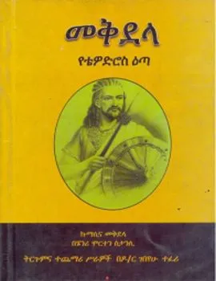
መቅደላ የተወድሮስ እጣ meqdela yetewedros eta ገበየሁ ተፈሪ · 2019 -
መቅደላ (የቴዎድሮስ ዕጣ )መቅደላ (የቴዎድሮስ ዕጣ ) Mekidela (YeTewodros Eta) Henary Morten Stancy
-
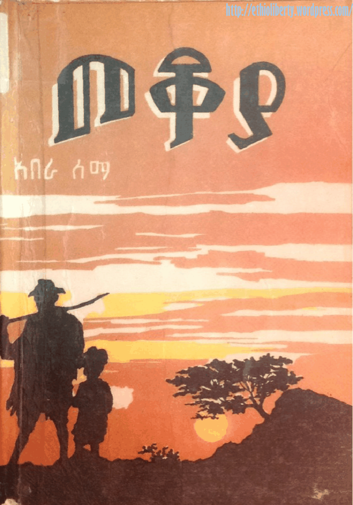
መቆያ meqoya አበራ ለማ, ሲሣይ በየነ · 1981 -
መብረር እፈልጋለሁመብረር እፈልጋለሁ Mebrer Efeligalehu Samrawit A Mersha · 2022
-
መተዋወቂያመተዋወቂያ Metewawekia Kebede Desta
-
መች ተለመደና ከተኩላዝምድናመች ተለመደና ከተኩላዝምድና Mech Telemedena Ketekula Zimdina Aleka Ayalew Tamiru · 1961
-
መነንመነን Menen Ethiopian Patriotic Association
-
መነኩሴው እና ማሞመነኩሴው እና ማሞ The Holy Monk and Mamo Kumneger Tilahun
-
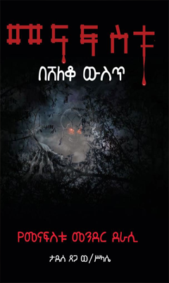
መናፍስቱ በሸለቆ ውስጥ menafestu besheleqo weset ታደሰ ፀጋ · 2010 -
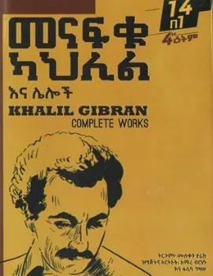
መናፍቁ ካህሊል እና ሌሎች menafqu kahlil ena leloch ሙሉቀን ታሪኩ -
መናፍቓንን መልስታቶንምመናፍቓንን መልስታቶንም Menafkanin Melistatomin Memihir Zerea Gebregziabher
-
መንትዮቹ ልጆችመንትዮቹ ልጆች The twin boys Mesfin Degefu
-
መንገደ ሰማይመንገደ ሰማይ Mengede Semay Pope Mekariyos · 2001
-
መንገደኛመንገደኛ Mengedegna Yordanos Almaz Seifu
-
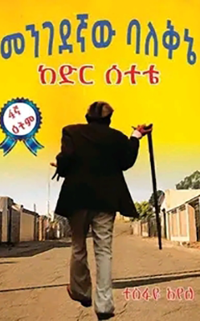
መንገደኛው ባለቅኔ mengedenyaw baleqne ተስፋዬ አየለ · 2012 -
መንገደኛው ባለቅኔ (ከድር ሰተቴ)መንገደኛው ባለቅኔ (ከድር ሰተቴ) Mengedegnaw Balekine (Kedir Setete) ተስፋዬ አየለ
-
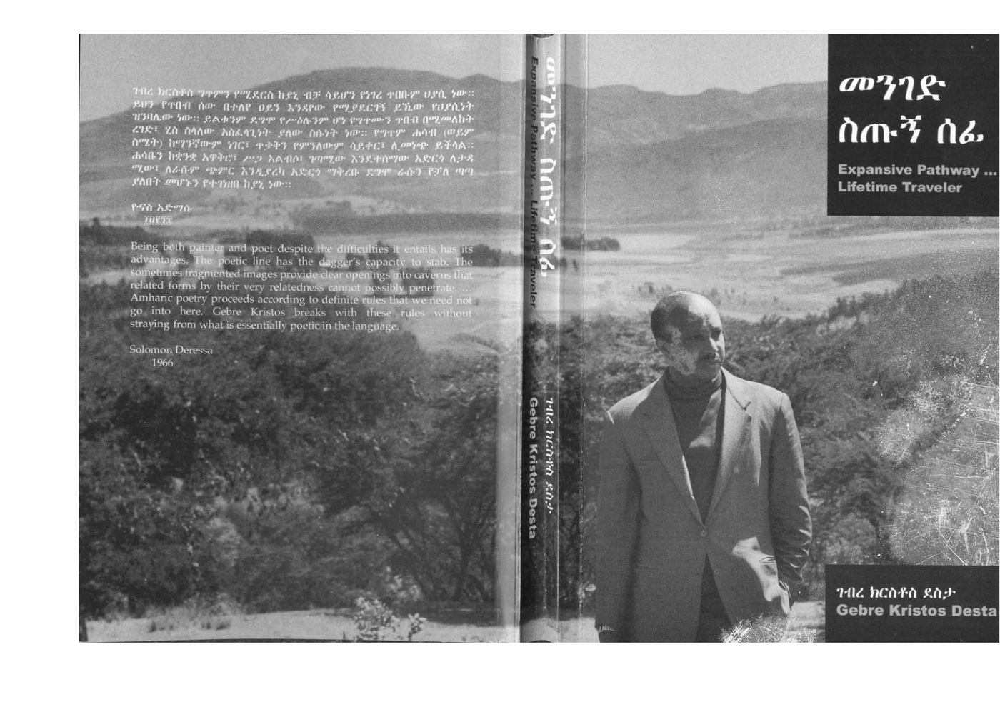
መንገድ ስጡኝ ሰፊ Expansive Pathway ... Lifetime Traveler ገብረ ክርስቶስ ደስታ, ሄራን ሠረቀ ብርሃን · 2006 -
መንገድ የጠፋባቸው መንገደኞችመንገድ የጠፋባቸው መንገደኞች Menged yetefabachew Mengedoch Bekalu Tegegne · 2012
-
መንግስቱ ኃ/ማርያም እና አብዮቱመንግስቱ ኃ/ማርያም እና አብዮቱ Mengistu Hailemariam Ena Abiyotu (Transformation and Continuity in Revolutionary Ethiopia) Christopher Clapham
-
መንግሥቱ ኃይለ ማርያም ለኢሠፓ ማዕከላዊ ኮሚቴ 11ኛ መደበኛ ስብሰባመንግሥቱ ኃይለ ማርያም ለኢሠፓ ማዕከላዊ ኮሚቴ 11ኛ መደበኛ ስብሰባ የቀረበ ሪፖርት r Mengstu Hailemariam LE.SE.PA.A.Ko Ma'ekelawi Komite 11gna Medebegna Sibseba yakerebut Ma'ekelawi Riport
-
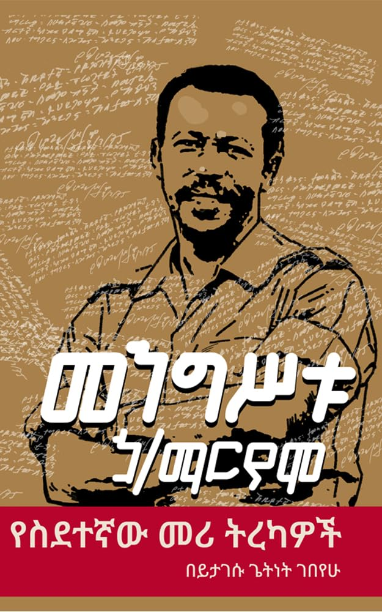
መንግሥቱ ኃይለ ማርያም የስደተኛው መሪ ትረካዎች Mengistu Hailemariam : Yesidetegnaw Meri Tirekawoch Yitagesu Gebeyehu · 2025 -
መንግስቱ ኃይለማርያም የስደተኛው መሪ ትረካዎችመንግስቱ ኃይለማርያም የስደተኛው መሪ ትረካዎች Mengistu Hailemariam (Yesidetegnaw Meri Tirekawoch) Yitagesu Getnet Gebeyehu
-
መንግስቱ ለማ(ደማሙ ብዕረኛ)መንግስቱ ለማ(ደማሙ ብዕረኛ) Mengistu Lema (Demamu- Bi'eregna) Mengistu Lemma · 1996
-
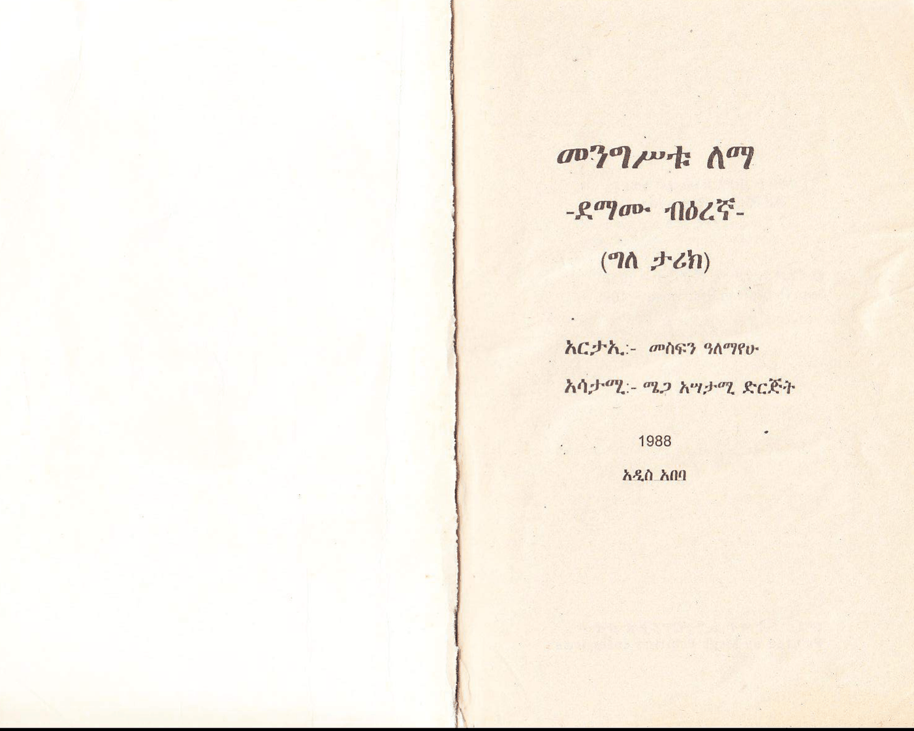
መንግሥቱ ለማ -ደማሙ ብዕረኛ- (ግለ ታሪክ) menegestu lema -demamu berenya- (gele tarik) መንግሥቱ ለማ, መስፍን አለማየሁ · 1988 -
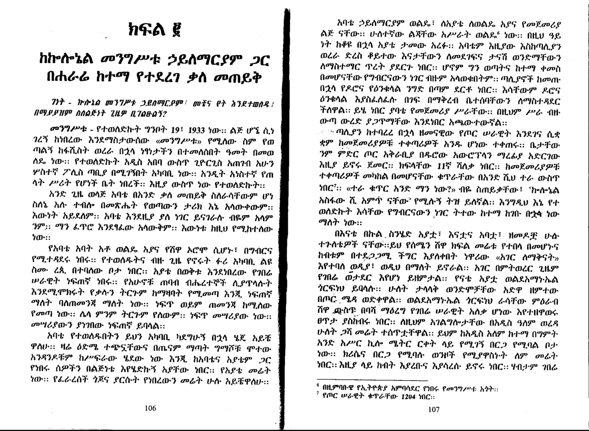
መንግስቱ ትዝታዎች- 2 menegestu teztawoch- 2 -
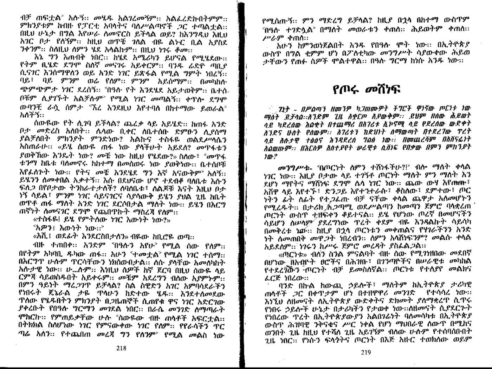
መንግስቱ ትዝታዎች- 3 menegestu teztawoch- 3 -
መንግስታት ለም ይወድቃሉ?(የሥልጣን የብልጽግናና የድህነት ምንጮች)መንግስታት ለም ይወድቃሉ?(የሥልጣን የብልጽግናና የድህነት ምንጮች) Mengisitat Lemin Ywedkalu?(YeSilitan,YeBilitsigina ena Yedihinet Minchoch) James A Robinson, Daron Achemolu
-
መንግሥትና ሕዝብመንግሥትና ሕዝብ Mengistina Hizib Yohannes G/Tsadik
-
መንግሥትና የሕዝብ አስተዳደርመንግሥትና የሕዝብ አስተዳደር Mengistina Yehizib Asitedader Negadiras G/Hiwote Baykedagn
-
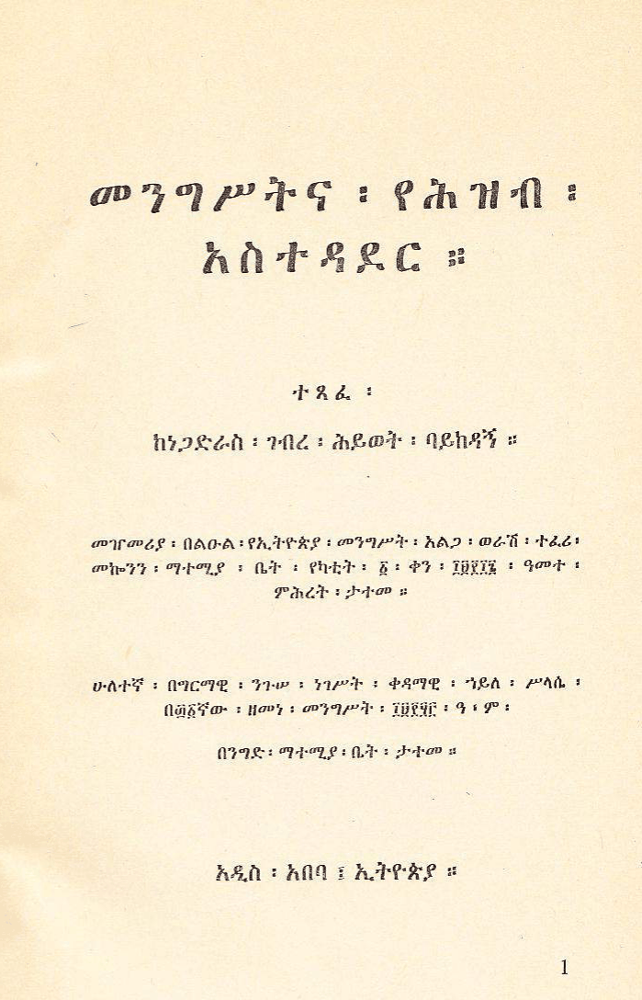
መንግሥትና የሕዝብ አስተዳደር menegesetna yehezeb astedader ነጋድራስ ገብረ ሕይወት ባይከዳኝ, ጳውሎስ መናመኖ · 1960 -
መንፈሳችንን ነጻ ስለማውጣትመንፈሳችንን ነጻ ስለማውጣት Menfesachinin Netsa Silemawtat Abune Shenoda Salsawi
-
መንፈሳዊ ሕይወት ምንድነው?መንፈሳዊ ሕይወት ምንድነው? Menfesawi Hiywet Mindnew Saint Gorgorios Zenusis · 2015
-
መንፈሳዊ ሰው መሆንመንፈሳዊ ሰው መሆን Mesfesawi Sew Mehon Abune Shinoda Salsawi
-
መንፈሳዊው መንገድ የንስሐ ህይወትመንፈሳዊው መንገድ የንስሐ ህይወት Menfesawiw Menged YeNisaha Hiywet Abune Zekarias of Egypt
-
መንፈሳዊ ውጊያዎች (የዲያብሎስ ውጊያዎች ሁለተኛ መጽሐፍ)መንፈሳዊ ውጊያዎች (የዲያብሎስ ውጊያዎች ሁለተኛ መጽሐፍ) Menfesawi Wgiyawoch (Yediyabilos Wgiyawoch 2gna Metshaf) Late Patriarch Pope Shinoda III · 2007
-
መኖም'ዩ ተበዲሉ?መኖም'ዩ ተበዲሉ? Menom'm Yu Tebedilu? Fenkil Zeray
-
መኖም'ዩ ተበዲሉ? 2መኖም'ዩ ተበዲሉ? 2 Menom'm Yu Tebedilu? 2 Fenkil Zeray
-
መዐዛ ቅዳሴ (ንባቡና ትርጓሜው)መዐዛ ቅዳሴ (ንባቡና ትርጓሜው) Meaza Kidase (Nibabuna Tirguamew) Megabe Mistir Aba Hiruy Ermias (Dr.)
-
መዕራፍመዕራፍ Meeraf መክብብ ደስታ in ያቶ መሰንበት ባልንጀርነት ታሪክና የምስጋና ግጥም
-
መዕራፍ ዘቅዱስ ያሬድ (ምስለ መልካዐ ያሬድ ምቅናይ ዘሕንጸተ ቤተ ክርመዕራፍ ዘቅዱስ ያሬድ (ምስለ መልካዐ ያሬድ ምቅናይ ዘሕንጸተ ቤተ ክርስቲያን ወዜና ሕይወት ዘቅዱስ ያሬድ) Mi'eraf Zekidus Yared (Misle Melk'a Yared,Mikinay Zehintsete Bete Christian Wezena Hywet Zekidus Yared) Efrem Mekonnen, Like Hiruyan Belay Mekonen
-
 መከረኞቹ
Mekerenyochu
መከረኞቹ
Mekerenyochu
-
መከረኞችመከረኞች Mekeregnoch Victor Hugo
-
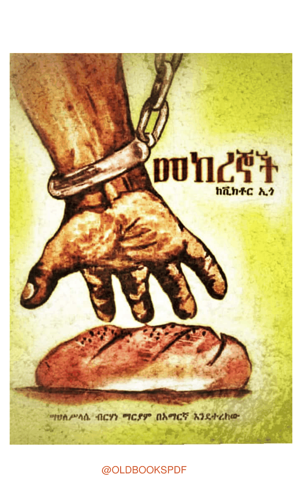
መከረኞች mekerenyoch ቪክቶር ኢ.ጎ, ሣህለሥላሴ ብርሃነ ማርያም, ሉቃስ አማሪ -
መኩሪያመኩሪያ Mekurya Genene Mekuria (Libro)
-
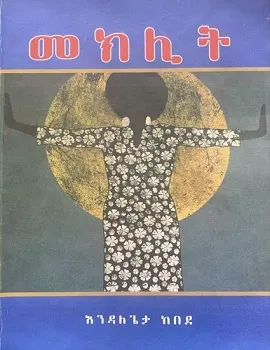
መክሊት meklit እንዳለጌታ ከበደ · 2012 -
መክሊትመክሊት Meklit
-
መክሊትመክሊት Meklit Tadelle Fentaw · 2012
-
መክስተ ምስጢር ሕይወታዊ ርእዮትመክስተ ምስጢር ሕይወታዊ ርእዮት Mekste Mstir Hywetawi Re'yot መሪራስ አማን በላይ · 2009
-
መክስተ ሰዋስው (የሰዋስው መልመጃ)መክስተ ሰዋስው (የሰዋስው መልመጃ) Mekiste Sewasiw (Yesewasew Melimeja) አስፋው ተፈራ
-
መክሸፍ እንደኢትዮጵያ ታሪክመክሸፍ እንደኢትዮጵያ ታሪክ Mekishef EndeEthiopia Tarik Prof.Mesifin W/Mariam · 2013
-
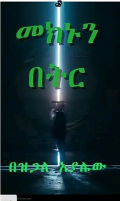
መክኑን በትር meknun beter ዝጋለ አያሌው · 2015 -
መወልወያ አዙአሪው እና ሌሎችመወልወያ አዙአሪው እና ሌሎች Mewelweya Azuariw Ena Leloch Samson Kefyalew
-
መወዳእታ መዓልቲ(ብሉፃት ልቢ ወለዳት)መወዳእታ መዓልቲ(ብሉፃት ልቢ ወለዳት) Mewedae'ta Mealti (Bilitsat Hatserti Libi Weledat) Addisalem Hegos Kassa · 2012